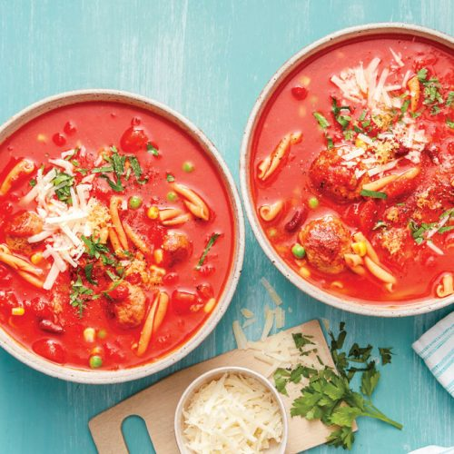

SOUPS

Minestrone Soup With Meatballs
This one-pan meatball minestrone is hearty and nutritious and is ready in only twenty minutes.
Serves: 2
Time to make: 20 mins
Hands-on time: 5 mins
Nutrition Info (per serve)
Calories : 540cal
Kilojoules : 2256kJ
Protein : 37.7g
Total fat : 11.5g
Saturated fat : 3.9g
Carbohydrates : 62.6g
Sugars : 22.6g
Dietary fibre : 15.2g
Sodium : 917mg
Calcium : 264mg
Iron : 7.1mg
Ingredients
4 lean lamb sausages (removed from case, rolled into meatballs) or 10–12 store-bought
lamb meatballs
14oz can no-added-salt chopped tomatoes
1¹⁄³ cups passata
1 cup reduced-salt chicken stock
1 clove garlic, crushed
½ cup casarecce chickpea pasta
4oz can red kidney beans, rinsed, drained
1 cup frozen corn, pea and capsicum mixture, thawed
2 tablespoons chopped flat-leaf parsley
1 teaspoon lemon zest
1 tablespoon shredded parmesan
Instructions
1. Spray a medium saucepan with olive oil, set over medium-high heat. Cook the meatballs, stirring, for 5 minutes, or until browned. Transfer to a plate.
2. Add the canned tomatoes, the passata, stock and garlic to pan. Bring to the boil. Add the pasta. Cook for 5 minutes.
3. Return meatballs to pan along with the kidney beans and frozen vegetables. Reduce the heat to medium, simmer for 5–10 minutes, or until pasta is just tender and the meatballs cooked through. Season the soup with cracked black pepper.
4. Ladle soup into two serving bowls. Serve topped with parsley, lemon zest and parmesan.